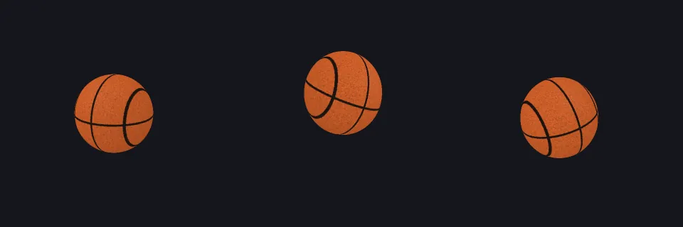
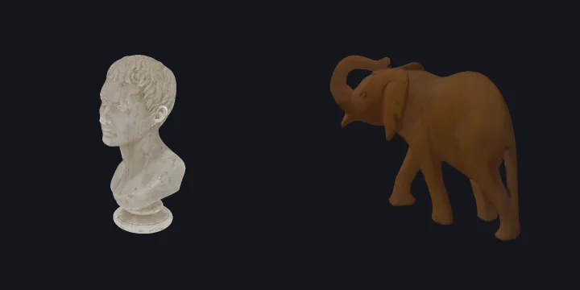
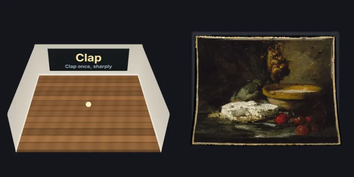
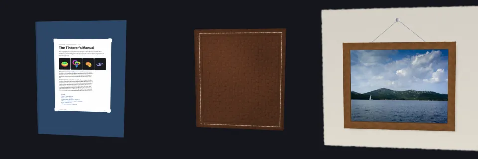
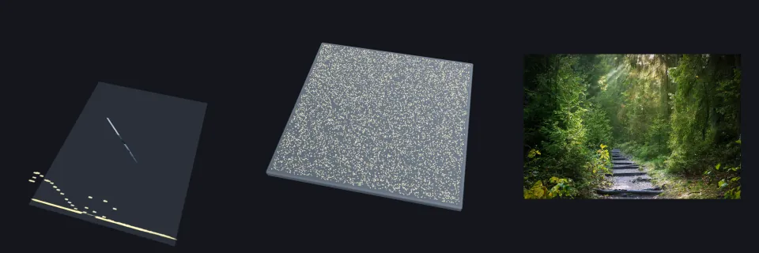
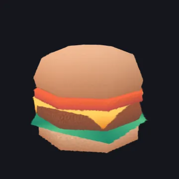
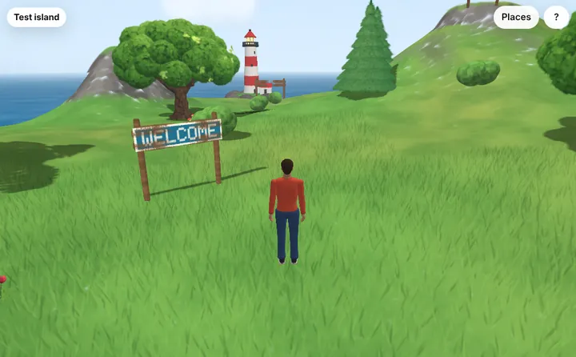
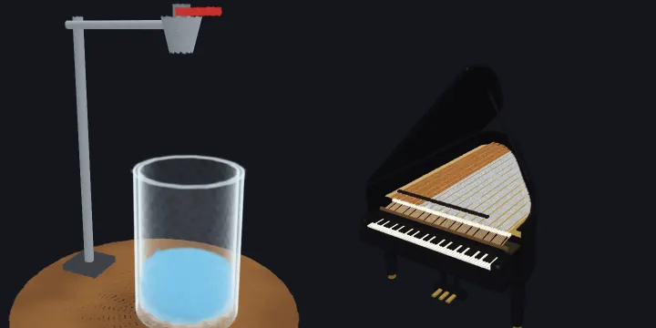
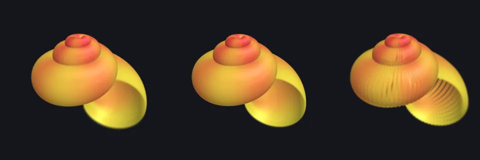
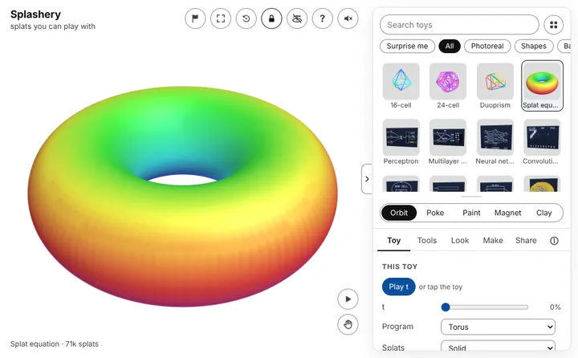

What else Splashery does now
This chapter lists what is on the site today, beyond the equation toy and picture toys you
have read about. It describes only what is built. The labs switch hides newer parts
until they are ready: add ?labs=1 to the site's address to turn it on (the
browser remembers it; ?labs=0 turns it off). Each paragraph says what is behind
it. The same list is a page on the site:
What Splashery can do.
Hands-on physics
With the ✋ switch on, a drag picks up whatever is under your finger and a quick let-go
tosses it. It lands, bounces, and settles on the floor under the toy, inside an invisible
play area, and soft toys squish when they land. The ↺ button sends everything home. Most
toys play this way, scans included, as one rigid body
(src/physics/hands-on.js). A recipe can turn it off (handsOn: false), and picture toys and still toys play only if the recipe opts in
(handsLevel1) or has joints. A recipe's hands block can instead
make its pieces separate bodies, so a toy can have its own interactions. This is not behind
the labs switch.

The QR code toy
The QR code toy makes a code from a link, plain text, a Wi-Fi network, a contact card, or an email, and builds it from splats. Its motions (assemble, flip, burst, and return, and an "alive" color wave) move each piece as a solid tile, and the alive wave keeps the gray values a reader sees unchanged, so each frame still scans. A "Scan view" turns the code flat to the camera, and after every change the toy renders that view and reads it back, to check that it scans. The reader is the browser's own detector where there is one, and otherwise the vendored jsQR library; nothing leaves the device. A Wi-Fi password is not kept in a link. This toy is behind the labs switch.
Captures and file formats
The viewer opens .ply, .sog, .splat, and
.spz files (version 4 SPZ files, which need a decoder Splashery does not ship,
are refused with a message). Files can carry spherical harmonics, the view-dependent color
the kit's splats do not use. The Scans shelf holds captures with their licenses and credits.
The newer captures each ship as a full file and a lite file, and some keep a band of
spherical harmonics on the full file. Many of the newer captures are behind the labs switch.

Camera, microphone, and screen
A toy can read the microphone, the camera, or a shared screen, but only after you tap a button for it. Nothing is requested before that tap. While a source is on, a small "Live" pill with a Stop button shows at the top of the page, and the sound or pictures stay on your device: nothing is sent anywhere, and nothing is recorded unless you ask. (One exception: a recorder, such as the splat mirror's, records only after you tap Record, keeps the recording on your device, and saves it only to a file you choose.) Two examples are the room echo meter (clap, and it measures how long the room rings) and the splat mirror (your camera as splats, with a depth model of about 27 MB that loads only after you start the camera). Both are behind the labs switch.

Books, albums, and frames
Your book turns the pages of a PDF as paper: a page is a leaf with a front and a back, the engine can re-sort the splats of a turning page where it stands, and a turn waits until the next page is ready so it never shows a blank one. The words of a PDF page are available from its text layer, and links in the PDF are tinted on the page. The photo album opens several photos at once, and the picture frame lets you list them and move each up or down. These toys are behind the labs switch.

Studio: sound and photos
The Studio shelf turns other things into splats on your device. The song landscape makes a spectrogram of a song you open into a 3D field, and the Chladni plate shows sand finding a plate's still lines. Photo to 3D runs a depth model on your device, works out how far each part of a photo is, and rebuilds the photo as splats at their depths. The Studio toys are behind the labs switch.

Models to splats
The Model to splats toy opens a glTF or GLB file, an OBJ with its MTL, or an STL file and
turns it into splats on your device: flat discs on the surface, more of them where there is
detail, each sized to its neighbors so the surface closes, and colored from the model's
texture, vertex colors, or material. A toy's input can take several files at once, for a
glTF with its .bin and textures. This toy is behind the labs switch.

Worlds
A world is a small place you walk around in, built on your device from recipes and a seed.
It has a start screen, a list of places, collision, a character, and a camera that follows.
In splats mode everything you see is splats. In hybrid mode the ground, water, sky, and
signs are lit models, and only the props and the near grass stay splats, so "everything is
splats" holds for the toys but not for every part of every world. Worlds are behind the labs
switch (worlds/?labs=1).

Fluids, songs, and smooth bodies
A recipe can declare a liquid, a gas or a flame with k.fluid. It is simulated
while the toy is open, and the engine loads only when such a toy opens. How it is drawn
depends on the fluid and on the device. On the page's own path
(src/fluids/render.js) each liquid particle is four small splats. On a device
with WebGPU, the liquids run on the graphics chip instead and are drawn as one smooth
surface, in a pass after the splats (src/fluids/gpu/surface.js). Smoke, steam,
and flames run on a grid on either kind of device and are drawn as a glowing volume
(src/fluids/gpu/gas.js); where the grid is off, their particles are splats. So
"made of splats" holds for the simplest path, but it is not the only way a fluid is drawn. A
keyboard toy can play songs from its own list, a MIDI file, or a tune pasted as ABC
notation, with every key, hammer, and string moving as a solid piece. Recipes can also join
shapes into one smooth body and place one toy's recipe inside another's (the anatomy atlas
does both). The Fluid lab, the bottle toys, and the anatomy atlas are behind the labs
switch.

Solid, Fine, and Dots, and the detail you see
The Splat equation toy has three looks. Solid lays a surface's splats flat along it so they close into a clean shape, Fine uses up to four times as many smaller splats within the device's budget, and Dots shows each splat you programmed as its own round dot. The toy also asks for the sharper labs kernel. Beyond that toy, the viewer's Detail setting (Auto, High, or Max, and with labs on a slider from 60,000 to 400,000 splats) lives in your browser only, never in a link, and on every toy the canvas resolution drops while you drag if frames are slow. Those two are not behind the labs switch; the toy and the sharper kernel are.

The viewer's controls
Focus mode hides everything but the toy (the F key or the focus button, and Esc brings the rest back). On a computer, [ folds the side panel and G opens the gallery. A toy's input panel can take a typed text, a drawing, a file, a binary file such as a sound, or several files at once. These controls are for everyone.
